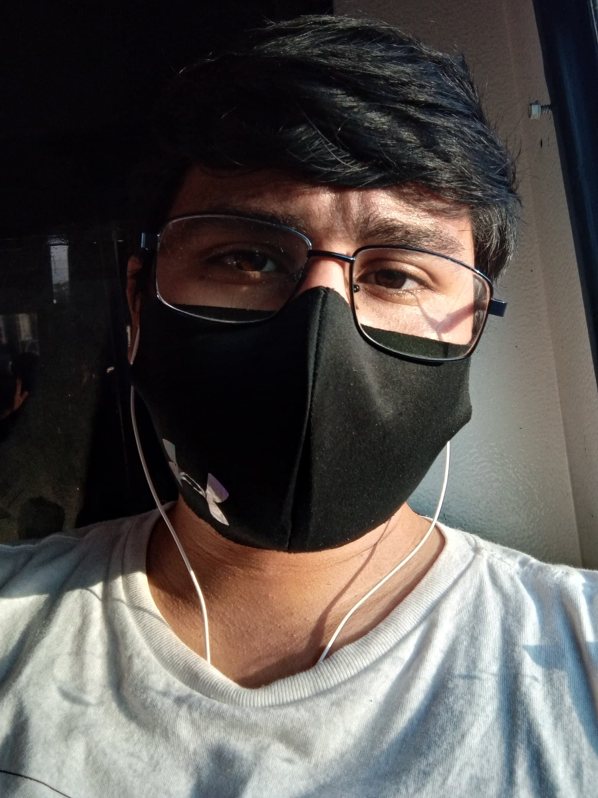
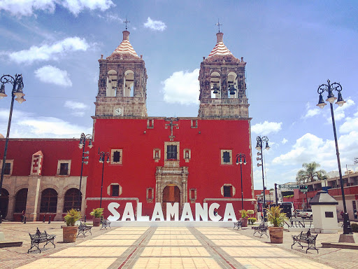
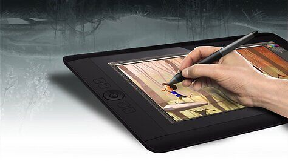

¡Hola!
Actualmente tengo 21 años de edad y me encuentro en mi quinto semestre de la licenciatura en Artes Digitales.


¿De dónde soy?
A la fecha sigo viviendo en esta ciudad, y aun con todos estos años nunca eh dejado de aprender o descubrir algo nuevo de ella.
Mis Intereses
Gracias a los juegos pude encontrar mi afición en el dibujo, siendo en estos ultimos años cuando pude obtener una tableta digital que me ha permitido seguir con mi sueño de convertirme en un artista digital de grandes empresas.
Fuera de este mundo tambien tengo una gran pasión por el futbol, no solo me gusta verlo, sino también praticarlo.


PROGRAMAS EN LOS QUE TRABAJO